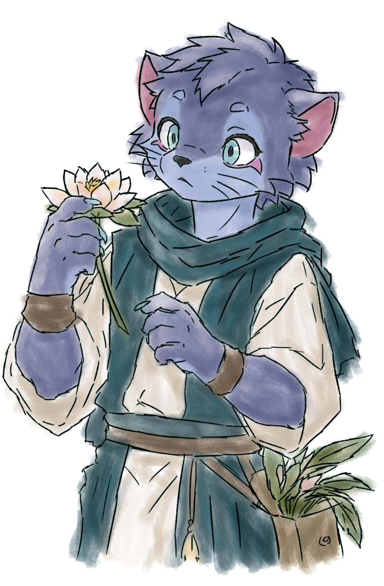
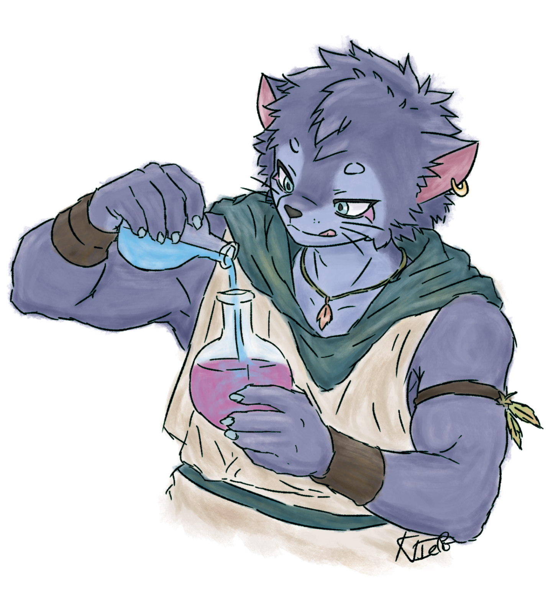
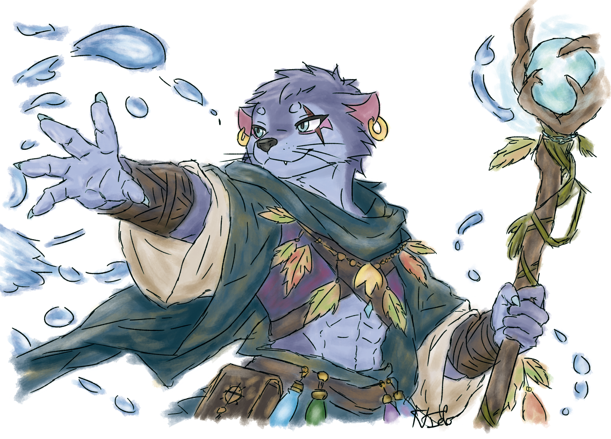

FAMILLE · TYPE EAU
Marin.
Survole une forme pour afficher ses informations. Sur téléphone, touche-la pour ouvrir sa fiche.

BASEMarinType Eau · Forme de base
FICHE DU FURRY
Marin · Base
TypeEau
StadeBase
PVÀ définir
VITÀ définir
ATKÀ définir
PORÀ définir
Attaques, coût en Énergie et Talent : à compléter lorsque la carte sera créée.

ÉVOLUTION · NIVEAU 1MarinType Eau · Première évolution
FICHE DU FURRY
Marin · Niveau 1
TypeEau
StadeÉvolution 1
PVÀ définir
VITÀ définir
ATKÀ définir
PORÀ définir
Attaques, coût en Énergie et Talent : à compléter lorsque la carte sera créée.

ÉVOLUTION · NIVEAU 2MarinType Eau · Deuxième évolution
FICHE DU FURRY
Marin · Niveau 2
TypeEau
StadeÉvolution 2
PVÀ définir
VITÀ définir
ATKÀ définir
PORÀ définir
Attaques, coût en Énergie et Talent : à compléter lorsque la carte sera créée.
Les valeurs de combat seront ajoutées quand les cartes de Marin seront définies.